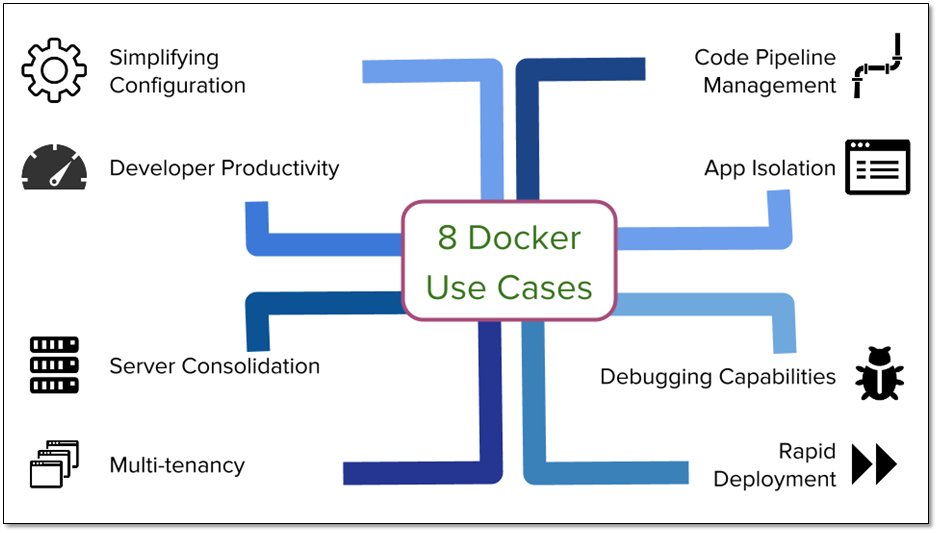

How Docker works and usage of it
Docker works by providing a standard way to run your code. Docker is an operating system for containers. Similar to how a virtual machine virtualizes (removes the need to directly manage) server hardware, containers virtualize the operating system of a server. Docker is installed on each server and provides simple commands you can use to build, start, or stop containers.
Using Docker lets you ship code faster, standardize application operations, seamlessly move code, and save money by improving resource utilization. With Docker, you get a single object that can reliably run anywhere. Docker's simple and straightforward syntax gives you full control. Wide adoption means there's a robust ecosystem of tools and off-the-shelf applications that are ready to use with Docker.
SHIP MORE SOFTWARE FASTER-
Docker users on average ship software 7x more frequently than non-Docker users. Docker enables you to ship isolated services as often as needed
STANDARDIZE OPERATIONS-
Small containerized applications make it easy to deploy, identify issues, and roll back for remediation.
SEAMLESSLY MOVE-
Docker-based applications can be seamlessly moved from local development machines to production deployments on AWS.
SAVE MONEY-
Docker containers make it easier to run more code on each server, improving your utilization and saving you money.
.png)
When to use Docker
You can use Docker containers as a core building block creating modern applications and platforms. Docker makes it easy to build and run distributed microservices architecures, deploy your code with standardized continuous integration and delivery pipelines, build highly-scalable data processing systems, and create fully-managed platforms for your developers. The recent collaboration between AWS and Docker makes it easier for you to deploy Docker Compose artifacts to Amazon ECS and AWS Fargate.
MICROSERVICES-
Build and scale distributed application architectures by taking advantage of standardized code deployments using Docker containers.
DATA PROCESSING-
Provide big data processing as a service. Package data and analytics packages into portable containers that can be executed by non-technical users.
CONTINUOUS INTEGRATION & DELIVERY-
Accelerate application delivery by standardizing environments and removing conflicts between language stacks and versions.
CONTAINERS AS A SERVICE-
Build and ship distributed applications with content and infrastructure that is IT-managed and secured.

For more info